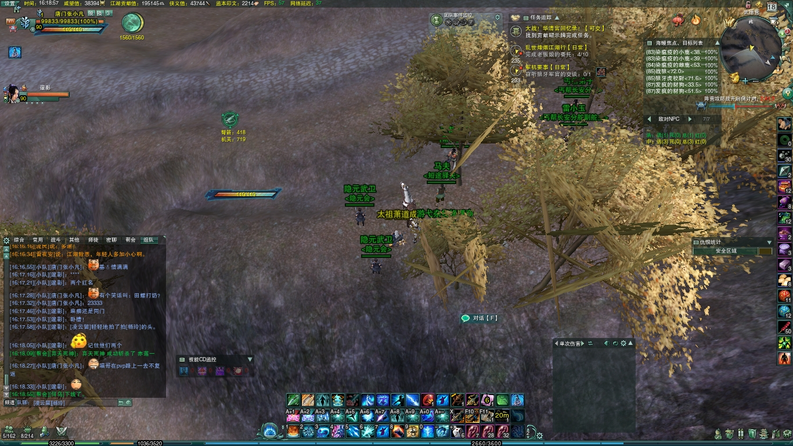

作者：漫思维 链接：https://www.zhihu.com/question/37248069/answer/199596603 来源：知乎 著作权归作者所有。商业转载请联系作者获得授权，非商业转载请注明出处。 下面我讲一个用推理获得岳父好感的故事！！那是我第一次去见女票父母，相见甚欢，晚上岳父请我和女票吃大排档。期间岳父叫了一瓶劲酒，说这是他最喜欢喝的一种酒，第一次喝是在旅店中喝到的
之后就爱不释手。 然后看着女儿问：你知道我第一次喝劲酒是什么时候么？女票愣了愣，一脸茫然…我突然意识到这是我表现的好时机！强烈的表现欲，让我接下来的5秒内完成以下思维操作：第一次是在酒店喝的，而且还问他的女儿…证明那次住店一定会和女儿有关，否则这个问题她是回答不上来的，问了也是毫无意义！所以是和女儿出行时住的旅店！
那是哪次一起出行呢？ 岳父的提问是：你知道…………？而不是：你还记得……？ 可以推断出是当时那次住店并没有住在一起！ 那什么时候女儿和父亲一起出行不住在一起？很大可能是送人，送人到其他地方，并且是父亲送女儿 才会出现这种父亲单独住店的情况(因为父亲在返程过程中有很大概率住店，送的途中是一起住。如果是女儿送父亲，那就是女儿单独住店)
那什么情况会出现父亲送女儿呢？ 参加活动？去亲戚家？夏令营？上学？ 据我了解女票：①参加活动很少 ~②夏令营也没有~③去亲戚家不太可能住店~所以最大的可能性最大的是升学…并且女票的学前班→高中都是在家乡，大学→研究生都是一个学校！所以就是父亲送女儿上大学那次出行
，父亲在返航中住店喝的人生第一瓶劲酒！ 我小声告诉女票答案，女票说出了答案，岳父很惊讶！问我怎么知道的？于是我再一次演绎上面的那个推理于是………………于是我少了个女票 多了个妻子！
作者：maomaobear
链接：https://www.zhihu.com/question/56635281/answer/199566766 来源：知乎 著作权归作者所有。商业转载请联系作者获得授权，非商业转载请注明出处。 和旁氏骗局还是有本质区别的。我们说的庞氏骗局，是高息吸收社会资金，新债还旧债，借不到债就跑。乐视是利用A股和中国的制度，上市圈钱，然后利用上市的资格获取大量债务。新债换不还得起旧债，一方面是新债能不能借到，一方面是资本市场能不能继续融资。旁氏骗局的特征是一直返给投资者钱。而乐视这种游戏是靠资本市场玩的。乐视只是资金链断掉的那个，大量A股，美股上市公司，大量所谓创业公司不过是资金链还没有断的乐视而已。顺便吐槽下A股，现在的制度设计，如果到就是想大搞一笔跑路的，确实是存在套利途径的。乐视是怎么上的市大家都知道，公开的信息是贿赂证监会某官员，这是检察院判了的。上市本身其实融资才几个亿，但是架不住增发啊！赶上一轮快牛的时候，IPO都不如增发狠，本来A股市盈率，市净率就高，牛市的时候，股价上天，增发价也就上天。1块钱净资产，股价20元，增发价18元一样发的出去。这是空手套白狼啊。乐视上市融资7个亿，增发就增了60个亿。就是说，乐视IPO成功后的第一步融资并不太多，但是有了A股入场券以后，后续融资就可以无穷无尽。定向增发，发债券都可以直接融资。而因为A股的制度设计，股东和债主对钱的用途去向是缺乏监管手段的。除了增发和发债，乐视网还通过股权质押的方式获得资金。目前，乐视网股权质押的总量占流通股的比例为96.66%，其中65.34%的股权未解押。这也是一个很有意思的事情。一个公司股份制可以有1000亿的盘子，而上市的可能只是10亿，其余的都有禁售限制，需要逐步解禁。而这10亿流通股的价格决定整个1000亿股份的价值。这就很有意思，A股本身市盈率，市净率都高。大盘子，小流动的模式，可以很轻易用不多的资金（上市公司还可以放出各种消息，在财报上粉饰，甚至通过关联公司制造虚假财报盈利）把股价炒作到高位。而小流动的高位，意味着大盘子里面所有的股票都有高价值，如果去做质押，就可以获取巨额的贷款。就算股票要跌，还有停牌。乐视网最大的一笔股权质押发生在2015年下半年，贾跃亭将其持有的限售股4.67亿股、流通股4000万股，共计5.07亿股进行质押，借入近百亿资金，用于乐视生态业务的发展投入。而乐视2015年的全部净资产才35亿元。目前的制度下，只要把一个公司弄上了A股，不多的净资产就可以通过股价游戏加上股票质押，借到净资产若干倍的钱。这种好事怎么能不让贾总们振奋呢？就是说，如果某A股老板，打定主意，准备捞一笔跑路的话，通过增发融资，发债，股票质押套现等手段，是可以借到巨额债务的。通过海外投资等手段把钱弄出去，自己肉身再一走。你慢慢打官司吧。A股之外，美股不赚钱，靠投资者预期支撑的公司有多少？大家期望它未来赚钱，这只是资金链没断裂，后续还有投资者来罢了。如果某家公司永远不赚钱，但是永远能忽悠到后续的投资者，他永远能借到新债还旧债，它就可以一直存在下去。特斯拉现在不是活得很好（虽然刚刚跌了一轮）。你看看给力哥现在搞的项目，电动车，火箭，超级轨道火车，有一样是能赚钱的吗？电动车根本就没有技术壁垒。火箭真能商业发射盈利的不知道要什么时候，那个火车更没谱，先得找到地方建啊。但是，你搞成媒体明星，搞成创业奇迹，媒体就会追捧你，然后散户和资本都会来。当然，给力哥运气好，美国股市连续好几年慢牛。特斯拉的投资者一直在赚钱。乐视的A股是快牛慢熊，贾总节奏拿捏不好很快就崩了。特斯拉如何，等一轮美国的熊市大致会有点端倪。现在各种创业公司，真正盈利的有几个？大家一轮轮多少亿的投资，其实也是一种击鼓传花的游戏，永远希望有下一棒，等到IPO以后退出。这也是一种投资者
预期。贾总当年就是为了捞一笔大的跑路，还是希望做成靠投资者预期维持下去的游戏，维持很多年，玩他想玩的？不是贾总肚子里面的蛔虫，谁也不知道。
jx3-memory

memory 1
this is a story about memory 1 of jx3-memory; this is a story about memory 1 of jx3-memory; this is a story about memory 1 of jx3-memory; this is a story about memory 1 of jx3-memory; this is a story about memory 1 of jx3-memory; this is a story about memory 1 of jx3-memory;

memory 2
this is a story about memory 2 of jx3-memory; this is a story about memory 2 of jx3-memory; this is a story about memory 2 of jx3-memory; this is a story about memory 2 of jx3-memory; this is a story about memory 2 of jx3-memory; this is a story about memory 2 of jx3-memory;

memory 3
this is a story about memory 3 of jx3-memory; this is a story about memory 3 of jx3-memory; this is a story about memory 3 of jx3-memory; this is a story about memory 3 of jx3-memory; this is a story about memory 3 of jx3-memory; this is a story about memory 3 of jx3-memory;
welcome to my jx3-memory!
click back